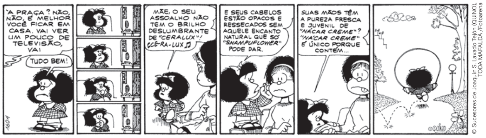

Ideologia e
1.
Reflita sobre o conceito de ideologia, associando-o às suas experiências. Considere a realidade em que está inserido e suas crenças e seus valores, além de avaliar como esse conceito se faz presente em sua escola. Registre suas conclusões. Em seguida, converse com os colegas, compartilhando suas percepções.
2.
Podemos afirmar que o preceito constitucional brasileiro que afirma que “todos são iguais perante a lei” se trata de uma afirmação ideológica? Por quê?
3.
Sobre a Indústria Cultural e a crítica apresentada na tira a seguir, avalie e indique no caderno quais afirmativas estão corretas.
I. A tira faz uma crítica ao estímulo ao consumo pelos meios de comunicação de massa, como a televisão.
II. A mãe da personagem Mafalda é uma pessoa desapegada dos cuidados com a casa e com o corpo.
III. A publicidade é parte da Indústria Cultural e tem como principal objetivo criar desejos que o indivíduo compreende que poderiam ser satisfeitos por meio do consumo.
IV. Os meios de comunicação de massa contribuem para que os indivíduos se sintam adequados e satisfeitos com a própria vida.
a) Apenas a afirmativa I e II estão corretas.
b) Apenas as afirmativas I e III estão corretas.
c) Apenas as afirmativas III e IV estão corretas.
d) Todas as afirmativas estão corretas.

QUINO. [Sem título]. In: QUINO. Mafalda: todas as tiras. Tradução: Monica Stahel. São Paulo: Martins Fontes, 2016.
I. A tira faz uma crítica ao estímulo ao consumo pelos meios de comunicação de massa, como a televisão.
II. A mãe da personagem Mafalda é uma pessoa desapegada dos cuidados com a casa e com o corpo.
III. A publicidade é parte da Indústria Cultural e tem como principal objetivo criar desejos que o indivíduo compreende que poderiam ser satisfeitos por meio do consumo.
IV. Os meios de comunicação de massa contribuem para que os indivíduos se sintam adequados e satisfeitos com a própria vida.
a) Apenas a afirmativa I e II estão corretas.
b) Apenas as afirmativas I e III estão corretas.
c) Apenas as afirmativas III e IV estão corretas.
d) Todas as afirmativas estão corretas.
4.
Leia o trecho a seguir de entrevista concedida pelo sociólogo francês Pierre Bourdieu para a socióloga brasileira Maria Andréa Loyola.
MA [Maria Andréa] – Recentemente, o senhor escreveu um livro sobre a televisão que constitui um reconhecimento da importância desse meio de comunicação no mundo atual e, ao mesmo tempo, uma crítica quase cruel de seus efeitos. O senhor diz, por exemplo, que a televisão produz um efeito global de despolitização e, mais exatamente, um desencantamento com a política. Diz que os jornalistas tendem a produzir uma representação instantânea e descontínua do mundo, através da qual passam, pouco a pouco, uma filosofia pessimista da história. Poderia nos dar alguns exemplos?
PB [Pierre Bourdieu] – É muito difícil, pois eu teria de tomar o exemplo de um jornal televisivo brasileiro e fazer uma análise detalhada. [...] [Na lógica da televisão], [...] o que ele [o jornalista] deve fazer é mostrar imagens e nada além de imagens. Sabemos que as imagens podem ser manipuladas por um determinado enquadramento ou por uma determinada técnica. O mais grave, porém, é o fato de se isolar a imagem daquilo de que ela é o complemento, de todo o contexto no qual ela adquire sentido e que a torna inteligível. As pessoas dizem: “Chega de humanitarismo, é muito triste, não posso mais olhar para isso”. É pior do que a despolitização. Expulsam-se pessoas do mundo, de tudo o que é importante, de tudo o que é sério. Existe uma lógica do mundo jornalístico – e em particular da televisão – que tende a apresentar um mundo absurdo, anedótico, sem pé nem cabeça.
Analise as alternativas e indique no caderno qual delas melhor reflete a forma como a televisão pode reduzir as experiências e subjetividades dos sujeitos, segundo Bourdieu.
a) A televisão apresenta um mundo coeso e interligado, o que permite uma compreensão profunda e plural dos eventos e das experiências individuais.
b) A televisão contribui para uma visão superficial e fragmentada da realidade, reduzindo a capacidade dos indivíduos de formar uma compreensão crítica do mundo.
c) A televisão promove uma análise detalhada e histórica dos eventos, ajudando os espectadores a relacionar as notícias ao contexto político e social mais amplo.
d) A televisão incentiva a autonomia dos sujeitos ao fornecer diversas perspectivas e análises críticas sobre os eventos, permitindo uma formação de opinião bem-fundamentada.
MA [Maria Andréa] – Recentemente, o senhor escreveu um livro sobre a televisão que constitui um reconhecimento da importância desse meio de comunicação no mundo atual e, ao mesmo tempo, uma crítica quase cruel de seus efeitos. O senhor diz, por exemplo, que a televisão produz um efeito global de despolitização e, mais exatamente, um desencantamento com a política. Diz que os jornalistas tendem a produzir uma representação instantânea e descontínua do mundo, através da qual passam, pouco a pouco, uma filosofia pessimista da história. Poderia nos dar alguns exemplos?
PB [Pierre Bourdieu] – É muito difícil, pois eu teria de tomar o exemplo de um jornal televisivo brasileiro e fazer uma análise detalhada. [...] [Na lógica da televisão], [...] o que ele [o jornalista] deve fazer é mostrar imagens e nada além de imagens. Sabemos que as imagens podem ser manipuladas por um determinado enquadramento ou por uma determinada técnica. O mais grave, porém, é o fato de se isolar a imagem daquilo de que ela é o complemento, de todo o contexto no qual ela adquire sentido e que a torna inteligível. As pessoas dizem: “Chega de humanitarismo, é muito triste, não posso mais olhar para isso”. É pior do que a despolitização. Expulsam-se pessoas do mundo, de tudo o que é importante, de tudo o que é sério. Existe uma lógica do mundo jornalístico – e em particular da televisão – que tende a apresentar um mundo absurdo, anedótico, sem pé nem cabeça.
BOURDIEU, P. Pierre Bourdieu entrevistado por Maria Andréa Loyola. Rio de Janeiro: EdUERJ, 2002. p. 41-42.
Analise as alternativas e indique no caderno qual delas melhor reflete a forma como a televisão pode reduzir as experiências e subjetividades dos sujeitos, segundo Bourdieu.
a) A televisão apresenta um mundo coeso e interligado, o que permite uma compreensão profunda e plural dos eventos e das experiências individuais.
b) A televisão contribui para uma visão superficial e fragmentada da realidade, reduzindo a capacidade dos indivíduos de formar uma compreensão crítica do mundo.
c) A televisão promove uma análise detalhada e histórica dos eventos, ajudando os espectadores a relacionar as notícias ao contexto político e social mais amplo.
d) A televisão incentiva a autonomia dos sujeitos ao fornecer diversas perspectivas e análises críticas sobre os eventos, permitindo uma formação de opinião bem-fundamentada.